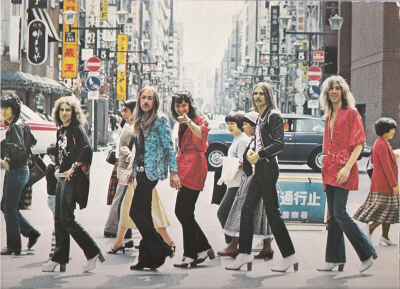

1962
Like many youngsters born in post-war Germany, Klaus Meine and Rudolf Schenker were influenced
by the music and other life-enhancing delights imported into their homeland by American GI’s – Elvis Presley, chewing gum, blue jeans and leather
jackets, but most of all rock ‘n’ roll. From an early age, both of them had an irresistible urge to grab a guitar and step into the limelight.
In the early 1960s the Beatles sparked off the beat revolution. By the mid-1960s Klaus Meine and Rudolf Schenker, both of whom were blessed with
understanding parents, had also taken to the stage with their beat groups. In 1965 Rudolf Schenker started up the SCORPIONS in Hanover. Rudolf’s
younger brother Michael Schenker was, like Matthias Jabs, smitten by beat music and the burgeoning rock culture. Guitarist and songwriter Rudolf
Schenker’s earliest influences were the raw riffs of bands like The Yardbirds, Pretty Things and Spooky Tooth, who in those days were regarded as
the real hard rockers. At New Year 1970, the younger Schenker brother Michael, who despite his youth had already established himself as an outstanding
guitarist, left the Hanover-based group Copernicus, along with singer and composer Klaus Meine, to join Rudolf Schenker’s SCORPIONS. Rudolf Schenker
and Klaus Meine teamed up to form the accomplished Schenker/Meine songwriting duo, so laying the foundations for a spectacular success story.
1972
In 1972, the SCORPIONS released their remarkable debut album, Lonesome Crow, produced by Conny Plank in Hamburg. The vocal and instrumental ingredients
which over the years were to develop into the typical, unmistakable SCORPIONS sound, were already recognisable: uncompromising, guitar-orientated hard
rock, on the lines of what Jimmy Hendrix, Cream and Led Zeppelin generated in the mid-1960s. The distinctive SCORPIONS style came from the combination
of two electric guitars, a fusion of fabulously forceful power riffs with dazzlingly exuberant guitar solos. Added to which was the instantly recognisable
voice of singer and front man Klaus Meine with his highly expressive and polished delivery. In one respect, the SCORPIONS were unique on the German rock
scene of the period. Because, right from the start, the band was aiming for the very top of the international hard rock business, Klaus Meine wrote all
his lyrics in English. In the creative partnership of Rudolf Schenker and Klaus Meine Germany had finally found its answer to the famous beat and rock
composing teams of the English-speaking world. The first album Lonesome Crow set the band on the path to international success. The SCORPIONS toured as
support band with Rory Gallagher, Uriah Heep and UFO. Throughout their history Rudolf Schenker has been the unshakeable driving force behind the
SCORPIONS. He adopted his father’s philosophy of life – nothing is impossible as long as you believe in it. Right from the foundation of the SCORPIONS,
he had only one declared ambition: "one day the SCORPIONS will be one of the best heavy rock bands in the world!" It was an idea to which all the band
members were committed. The SCORPIONS were constantly on the lookout for fresh challenges. Every change in the line-up was seen as an opportunity to move
closer still to success and the achievement of absolute professionalism.

1979
Since 1974, the SCORPIONS had In 1979, now professionally managed and boosted by the success of Lovedrive, the SCORPIONS with their definitive line-up
– Klaus Meine, Rudolf Schenker and Matthias Jabs – embarked on their first major tour of USA rock arenas as opening act with Aerosmith, Ted Nugent and
AC/DC. In Chicago, the SCORPIONS swapped the headliner billing with Ted Nugent, since the SCORPIONS had more fans in the city. On this first American
tour, the SCORPIONS quickly learned the rules of the game in the international rock business.
1985
The SCORPIONS’ most memorable appearances as headliners were at the 1983 US FESTIVAL in California’s San Bernadino Valley in front of an audience
of 325,000 and at the first Rock in Rio in 1985 where they were cheered by 350,000 enthusiastic South American SCORPIONS fans. The 1985 double album
WORLD WIDE LIVE, a counterpart to the 1978 TOKYO TAPES, impressively documented the band’s more recent international triumphs. In 1986, the SCORPIONS
topped the bill at the legendary MONSTERS OF ROCK Festival and played in the Hungarian capital Budapest, their first-ever appearance in an Eastern Block
country. By now the SCORPIONS were a household name, with hard rock hits like "Rock You Like a Hurricane", "No One Like You", "Blackout", "Big City
Nights", "Dynamite", "Bad Boys Running Wild", "Coast to Coast" and "The Zoo" featuring in the charts around the world. In the 1980s, the SCORPIONS
created a kind of modern hard rock that is just as popular today. Their authentic power rock ballads, such as "Still Loving You", "Holiday" and later
"Wind of Change", "Send Me an Angel", "When You Came Into My Life" and "You and I", along with acoustic based songs such as "Always Somewhere" and "When
the Smoke is Going Down" have managed to win over even the most unyielding haters of hard rock.
1996
In 1995 the SCORPIONS engaged former AC/DC manager Stewart Young, and it fell to him to call James Kottak on the phone and hire him as
drummer for the upcoming 1996/97 Pure Instinct Live Tour. James Kottak became the first American to play in the German rock band. With
the two new members, bass player Ralph Rieckermann and drummer James Kottak, the SCORPIONS had introduced a new generation of musicians
into the group. On the Pure Instinct world tour, the SCORPIONS proved that they were still among the global players on the international
rock scene. Not only did they play in Europe, the USA and South America. In countries like Malaysia, Thailand and the Philippines, they
continued to notch up well above average record sales and collect gold and platinum discs. In November 1996, the SCORPIONS were the first
international hard rock band to play to fans in Beirut after the end of the civil war in Lebanon. On the 1999 recording of Eye to Eye,
produced by Peter Wolf, James Kottak worked in the studio with the SCORPIONS for the first time. The cover of Eye to Eye marked a change
of image for the SCORPIONS. Only the founder members of the band, Rudolf Schenker, Klaus Meine and Matthias Jabs feature on the front cover.
The album itself is a statement of the SCORPIONS’ awesome talents as songwriters and instrumentalists. Songs like Mysterious, Mind Like a Tree,
Eye to Eye, Yellow Butterfly and A Moment in a Million Years show the band at the pinnacle of their creativity. With Du Bist So Schmutzig (You’re
So Dirty), the SCORPIONS are heard for the first time singing a German lyric. As part of their 1999 Eye to Eye world tour, at the invitation of
Michael Jackson, they played at the Michael Jackson and Friends benefit concert in Munich. True to their motto "Don’t stop at the top" the SCORPIONS
are starting the new millennium with a new musical challenge: a crossover project with the internationally renowned classical orchestra, the Berlin
Philharmonic, once conducted by the great Herbert von Karajan. - See more at:
http://www.scorpions.band/english/history.asp#sthash.1TBC6Kf6.dpuf
2004
With their uncompromising rock album UNBREAKABLE the SCORPIONS have unequivocally sounded their return in 2004 to the worldwide hard ’n’ heavy music
rena. UNBREAKABLE is a concept album in a very special sense. It symbolises the indestructibility of the basic musical coordinates of the SCORPIONS.
The unique power triad of outstanding musical figures: singer-songwriter Klaus Meine, guitarist and composer Rudolf Schenker and lead guitarist and
composer Matthias Jabs. UNBREAKABLE, the twentieth SCORPIONS album, is the quintessence of thirty-five years of SCORPIONS history. And at the same time
it marks the re-commitment of Germany’s internationally most successful hard rock export to their essential strengths. “First and foremost we are a rock
band,” says Klaus Meine, leaving no room for doubt. “Our fans expect to really feel the lethal sting of the SCORPIONS. So with UNBREAKABLE we’ve recorded
a typical SCORPIONS album.” Seconded by Rudolf Schenker: “After side projects like Moment Of Glory and Acoustica we owed our fans a kick-ass, bad-to-the
-bone rock CD.” Rudolf Schenker sees UNBREAKABLE as building a bridge between the SCORPIONS and their fans. “It’s an album that brings the old and the
new generation of SCORPIONS fans together.
Matthias Jabs sums it up: “With the new album we’ve returned to what the SCORPIONS are really all about.
Hand-made rock music. Pick up the instruments, plug them in, play,” is how he describes the highly successful three months spent working in the studio
with producer Erwin Musper. “The band together in one room for the basic tracks - back to the roots but in the contemporary rock sound of 2004. And at
the same time we’ve reshaped our live set with the new songs.” Erwin Musper, who as producer and sound engineer knows the SCORPIONS better than anyone
else, goes even further: “The SCORPIONS have set a new standard with UNBREAKABLE. It’s the best material the SCORPIONS have written in the last five
years. Any rock band setting out to record a new album, should have UNBREAKABLE as a reference in their sound library.” Erwin Musper knows what he’s
talking about. Born in The Netherlands, he’s been working with the SCORPIONS as producer and engineer since 1988. In addition, he has worked in the
USA for many years as producer for bands such as Metallica, Iron Maiden, Van Halen, Bon Jovi and Def Leppard. SCORPIONS drummer/composer, James Kottak,
is up front about it: “UNBREAKABLE is the best record ever from Germany’s No. 1 rock machine.” With UNBREAKABLE 2004 Klaus Meine, Rudolf Schenker and
Matthias Jabs are going onto the musical offensive with a typical SCORPIONS coup: Pawel Maciwoda is the new bass player of Germany’s globally most
successful rock act. This new band member is another signal that there’s no going back for the SCORPIONS.
Together with drummer James Kottak, this
hard rock bass player, steeled in the New York professional scene, represents a pressure build-up in the SCORPIONS’ now outstanding rhythm’n’groove
section. UNBREAKABLE symbolises the musical and personal identity that has characterised the SCORPIONS for over thirty-five years and accounted for
their lasting worldwide success. All this has ensured that the SCORPIONS are the only German band to have unswervingly pursued an international career
for over thirty-five years. “We’ve often been through hell, to experience heaven. We’ve always had faith in ourselves and have never accepted
limitations for ourselves,” is how Rudolf Schenker sums it up. “Doing a world tour and seeing how people respond to the music and are carried
away by it,” is for Rudolf Schenker simply “the best there is.” An “adventure” that he “wouldn’t miss for the world.” For SCORPIONS vocalist Klaus
Meine it’s “a fascinating experience, again and again, to contribute towards a peaceful world through the global language of music. To show that music
is a language that crosses frontiers and overcomes differences.” The outstanding date in this respect was the concert the SCORPIONS – from Germany –
gave in 2002 in Volgograd. For these musicians, born in post-war Germany between 1948 and 1955, it was a deeply felt contribution towards atonement.
What’s important for Matthias Jabs is to make “music that’s enduring” and that embodies the identity of the SCORPIONS. Over time and up there in front
of the fans. Music that satisfies the band’s own musical needs and those of their audiences. Music, above all, that stands the test of a live concert –
in the full exposure of the spotlights, “where you can’t hide anything.” In 2004 Klaus Meine gives this summary of the impressive history of the
SCORPIONS: “There’ll never be any substitute for live concerts with real music and real feelings.” It’s a statement from the heart that also looks
forward into the future. And UNBREAKABLE is the musical statement of now from Germany’s only global band.
2011
On 3 October 2011,the compilation album COMEBLACK was announced.
Released after the successful 2010's STING IN THE TAIL,
COMEBLACK features re-recorded versions of SCORPIONS classic songs as well as cover versions of 1960s and early 1970s popular rock songs.
The global release date was 4 November and a North American release date of 24 January 2012.
2013
On 11th, 12th and 14th of September 2013, the SCORPIONS played three concerts in Athens, Greece under the banner "MTV Unplugged - Scorpions
Live In Athens" at the Lycabettus Theatre over the roofs of the ancient city. For the first time in the history of the "MTV Unplugged" series,
a concert in Greece under the open sky took place.
The CD, Blu-Ray, and DVD was released on 29 November 2013.
2015
SCORPIONS RETURN TO FOREVER celebrating 50 years!
Celebrating a half-century of rock with the release of their 19th studio album, RETURN TO FOREVER (Sony Music/Legacy Recordings), globally on 20
February 2015 (North America release on 11 September 2015) with the first single and video "We Build This House".
On 11 December 2014 the band announced their global 50th anniversary tour which kicked off in China on 1st May and runs through spring 2016.
On 25 February the Scorpion announce a 16 date North American tour kicking off in Boston on 10 September.
So the band once again met up with their two favorite Swedes to realize a project, which initially had been
intended to be rather plain. Mikael Nord Andersson and Martin Hansen had already produced “Sting In The
Tail”, and re-arranged the whole material for “MTV Unplugged” together with Matthias Jabs.
“Actually, we only wanted to finally record some song ideas for the fans, which we had worked on in the
past but never put on an album, and then release them without much fanfare”, Matthias Jabs remembers.
“There had been quite a few over the years, ideas that were really good, but in the end didn’t make the cut
back then due to the limited space on vinyl and later on CD. We quickly had eight songs, which partly had
to be finalized first and were then recorded from scratch. During the work, increasingly new song ideas
were added from our end, as well as from the two Swedes. We had so much fun working and suddenly we
found ourselves in the middle of the songwriting process once again. And in the end, it turned out to be a
brand-new Scorpions album after all.”
The fact that the fiftieth band anniversary was coming up as well, hit Rudolf rather accidentally: “Not long
ago I found an old cash account book of my mom’s, in which she meticulously recorded the earnings and
expenses of my band Scorpions fifty years ago. My parents had lent me the money for the first equipment
back then, and it had to paid off in installments from the earnings. 50 years are a long time. Apart from us,
at most the Rolling Stones, the Beach Boys or The Who managed to do that. In that sense, the timing for
the new album is perfect, we’re celebrating half a decade of Scorpions with the record and the upcoming
tour.”